智能电视漏洞挖掘初探之寻找工程模式热键
智能电视漏洞挖掘初探之寻找隐藏功能热键
上周去打汽车安全比赛了，电视漏洞挖掘系列断更了一周，这周咱们继续。在智能电视漏洞挖掘初探之 Getshell 中总结了主流电视进入工程模式的方法,这些都是别人发现的。主要的来源应该是内部的维修文档，售后维修在维修工作中泄露出来的。车机的工程模式想必也一样。如果手头的电视使用已知的方法无法进入，此时当如何？出现这种情况，一是厂商更换了热键（组合键），或是进入方法未知（新系列、新入局者）。如果拿到了固件，那就可以自己动手分析。
隐藏功能不止工程模式，有点电视机文件管理器默认是不显示 APK 应用的，需要通过特殊的组合键开启 APK 显示。在分析应用之前，首先来了解一下遥控器键值。
Andriod Keycode
遥控器一般通过红外或蓝牙与电视通信，电视是如何知道我们按下的是什么按键。Android 电视通过按键事件（KeyEvent）监听来自遥控器的按键指令。按键的键值可以通过 getKeyCode() 获取。 键值定义在KeyEvent | Android 开发者 | Android Developers。如返回主页的 HOME 键，键值为 3。
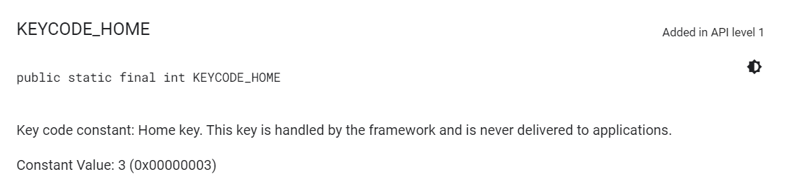
使用 ADB 可以模拟按键事件，以下两条命令都是返回主页的命令。输入之后，电视就会返回到主页。
1 | adb shell input keyevent 3 |
电视上常用的遥控器按键序号如下。
| 按键 | 序号 | 常量名 |
|---|---|---|
| 电源 | 26 | KEYCODE_POWER |
| 菜单 | 82 | KEYCODE_MENU |
| 语音 | 231 | KEYCODE_VOICE_ASSIST |
| 上键 | 19 | KEYCODE_DPAD_UP |
| 下键 | 20 | KEYCODE_DPAD_DOWN |
| 左键 | 21 | KEYCODE_DPAD_LEFT |
| 右键 | 22 | KEYCODE_DPAD_RIGHT |
| 静音 | 164 | KEYCODE_VOLUME_MUTE |
| 音量+ | 24 | KEYCODE_VOLUME_UP |
| 音量- | 25 | KEYCODE_VOLUME_DOWN |
| Home | 3 | KEYCODE_HOME |
| 返回 | 4 | KEYCODE_BACK |
| 确认 | 66 85 126 127 |
KEYCODE_ENTER KEYCODE_MEDIA_PLAY_PAUSE KEYCODE_MEDIA_PLAY KEYCODE_MEDIA_PAUSE |
| 数字0~9 | 144~153 | KEYCODE_NUMPAD_0 ~ KEYCODE_NUMPAD_9 |
上面大多都是一个按键对应一个，唯独确认键对应 4 个。这是因为确认键身兼数值，即是确认键又是播放控制键。
寻找隐藏功能热键
下面分享三个案例，第一个是开启 APK 显示，第二个寻找工程模式热键，最后一个是配置文件中的热键定义。
文件管理器显示 APK 文件
某电视在文件管理器中隐藏了 APK 文件，需要通过热键开启显示。现在来分析一下怎么打开。首先找到文件管理应用，然后使用 JADX 打开分析。
搜索关键词 APK
通过检索关键词 APK，看到一个字符串
filebrowser_show_APK。顾名思义是显示 APK 文件，看来就这个电视是可以通过热键开启 APK 显示的。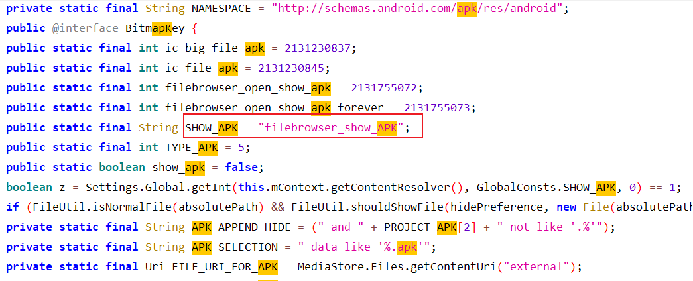
通过变量名定位到隐藏功能处理函数
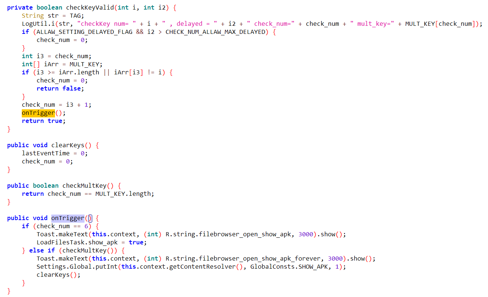
通过字符串变量名查询交叉引用，找到
onTrigger函数。onTrigger判断按键的个数启用不同的功能，如果输入的按键数为 6，设置标志 show_apk 为真，临时显示 APK。如果输入的按键数等于 MULT_KEY 的长度设置全局变量，永久显示 APK。热键
继续往上分析，MULT_KEY 数组为
{82, 82, 19, 19, 20, 20, 21, 22}。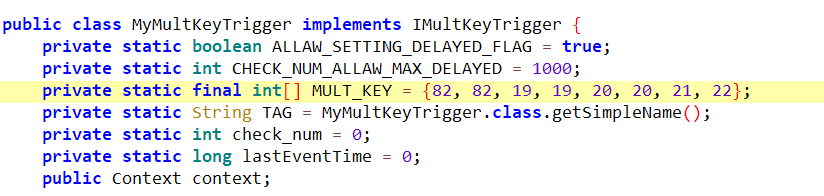
与 Android Keycode 编码对应，转换成按键为
菜单-菜单-上键-上键-下键-下键-左键-右键。checkKeyValid 中对按键序列进行验证，只有与 MULT_KEY 相匹配才能通过验证。每按下一个按键就验证一个键。如果序列正确返回 true，否则返回 false。
1
2
3
4
504-30 17:00:52.882 15156 15156 I FileManager-MyMultKeyTrigger: checkKey num= 82 , delayed = 495 check_num=1 mult_key=82
04-30 17:00:52.882 15156 15156 I FileManager-MyMultKeyTrigger: checkKey check key valid = true
04-30 17:04:40.187 15156 15156 I FileManager-MyMultKeyTrigger: checkKey lastEventTime=8419053
04-30 17:04:40.187 15156 15156 I FileManager-MyMultKeyTrigger: checkKey num= 19 , delayed = 227304 check_num=2 mult_key=19
04-30 17:04:40.187 15156 15156 I FileManager-MyMultKeyTrigger: checkKey check key valid = false触发位置
现在知道了热键，还需要知道在哪里触发。继续往上看，在文件管理器 activity 创建的时候在 VerticalGridView 上监听了一个按键事件（OnKeyInterceptListener），首先验证热键，判断是否开启 APK 显示。
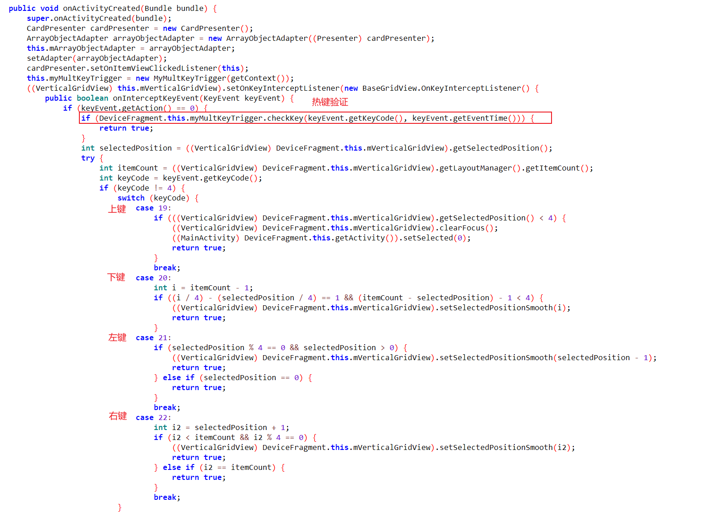
验证
最后总结一下使用方法，遥控器的焦点在本地文件处，然后按顺序点击 菜单-菜单-上键-上键-下键-下键-左键-右键 后，显示提示信息 “apk应用显示已经永久开启”。然后插入U 盘，就能看见里面的文件了。
使用热键进入工程模式
某次发现一个工程模式应用的 AndroidManifest.xml 没有定义 activity，仅作为一个服务被其他应用调用。
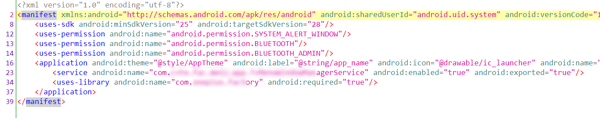
不能自己主动打开，但可以使用命令 am startservice 启动服务，打开应用页面就进入了工程模式。
1 | adb shell am startservice -n {package}/{package}.{service} |
寻找热键
启动这个应用的前提便是有 ADB 权限，但还是希望能在常规状态打开这个应用。工程模式一般都能使用热键打开，现在开始追溯。通过搜索 service name，在另外一个应用中找到了调用函数。
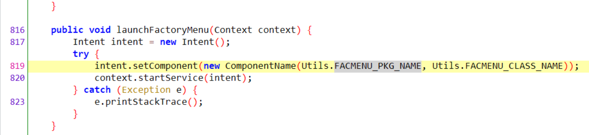
遗憾的是，这个应用也是一个服务，不能直接打开。那么再往上寻找，搜索关键词 launchFactoryMenu ，发现在 TvSettingsPlus.apk 中定义了热键打开工程模式的方法。
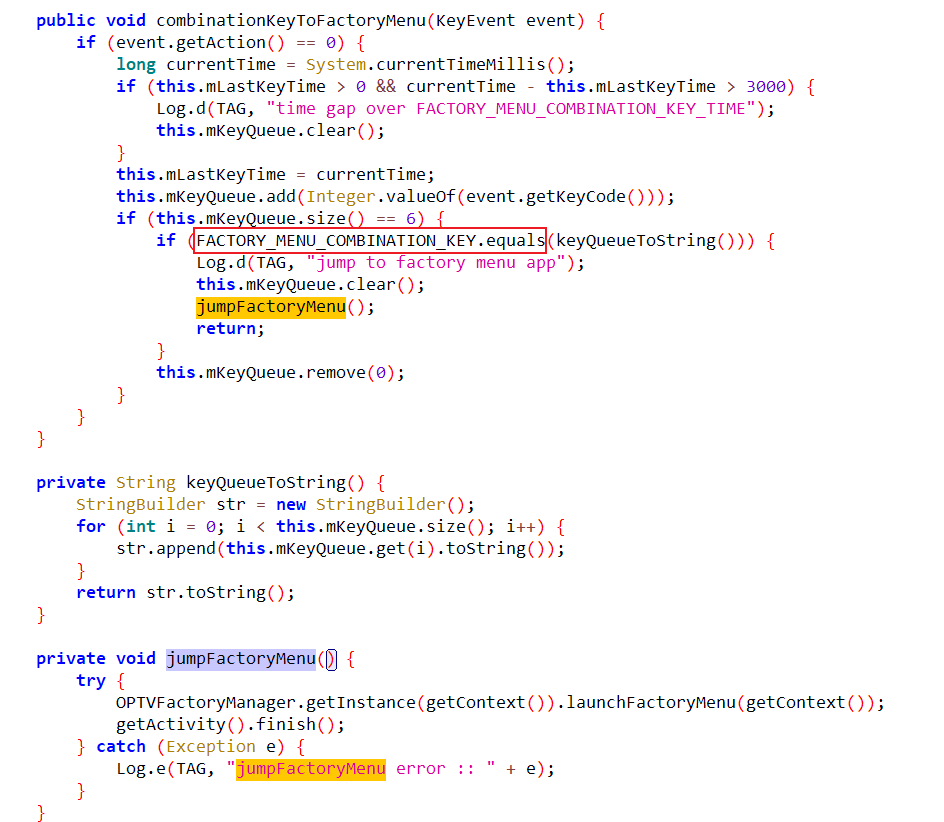
同样，FACTORY_MENU_COMBINATION_KEY 也是一个数组。根据 Andriod Keycode 解码得到
音量+ 音量- 左 左 上 下。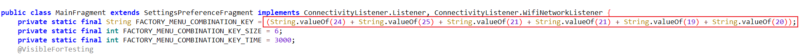
触发位置
找到热键之后，还需要找到触发为位置。根据 TAG
com.android.tv.settings.MainSettings.SETTINGS_FRAGMENT可知是在系统的设置页面中。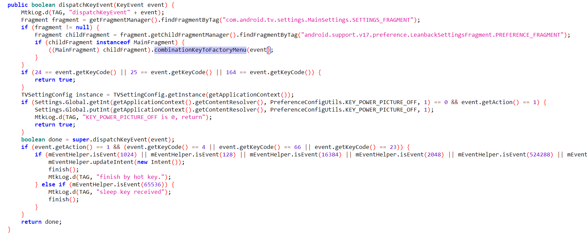
验证
首先进入系统设置页面。然后，依此连续快速按遥控器的
音量+ 音量- 左 左 上 下进入工程模式。
热键配置文件
上面的两个案例热键序列都是存在一个数组中，还有另外的方案，如存储在配置文件中。
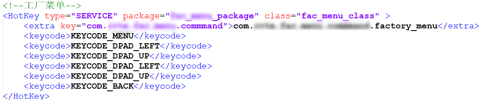
如上，就可以使用 菜单 左 上 左 上 返回进入工厂菜单（工程模式）了。
总结
智能电视中的不少的隐藏功能，需要使用遥控器热键启用。应用监听遥控器发送过来的点击事件启用隐藏功能。分析了一些电视的热键发现基本采用两种方式定义热键，一个是定义在配置文件、另一个是在应用中通过数组定义。找到热键组合后还需要找到触发的页面，只有在特定还能触发成功，因为处理函数只监听在特定界面。